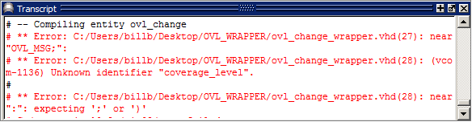
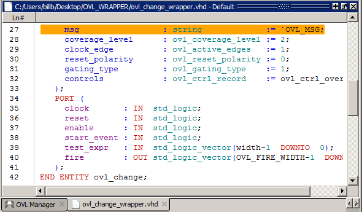

The
OVL Checkers Manager allows you quickly identify and resolve compile
errors.
Procedure
- When a compile operation fails, view the red
text in the Transcript window for descriptions of the errors. (Figure 1).
Figure 1. Errors Appear in Red Text in Transcript
- Double-click any error text in the Transcript
to open a Source Code Editor to find the source of the compile error.
For example, the first
error shown in the Transcript window, above, is in line 27 of the ovl_change_wrapper.vhd
file. If we double-click that error in the Transcript, a Source Code
Editor will open and line 27 will be highlighted, as shown in Figure 2.
Figure 2. Source Code Editor
- Correct the coding error.
- Save the corrected code.
- Recompile the code.